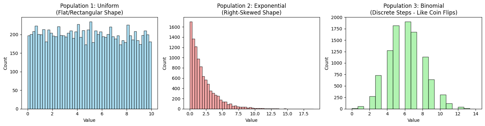
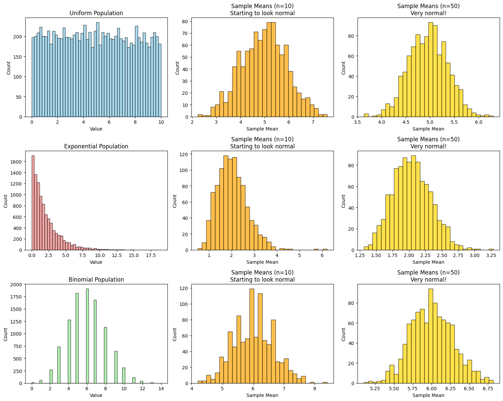

Problem 1
Central Limit Theorem — Simulation Study
Objective
To demonstrate the Central Limit Theorem (CLT) using simulation by: - Sampling from different distributions. - Computing sample means. - Observing the shape of the sampling distribution.
Theory
Central Limit Theorem (CLT)
Let \(X_1, X_2, ..., X_n\) be a random sample from a population with mean \(\mu\) and variance \(\sigma^2\).
Then the standardized sample mean:
approaches a standard normal distribution \(N(0,1)\) as \(n \rightarrow \infty\).
Key Definitions and Formulae
-
Sample Mean: $$ \bar{X} = \frac{1}{n} \sum_{i=1}^n X_i $$
-
Sample Variance: $$ S^2 = \frac{1}{n-1} \sum_{i=1}^n (X_i - \bar{X})^2 $$
-
Standard Error (SE): $$ \text{SE} = \frac{\sigma}{\sqrt{n}} $$
Simulation Setup
Step-by-step Plan:
- Choose distributions:
- Uniform(0,1)
- Exponential(λ=1)
-
Binomial(n=10, p=0.5)
-
For each:
- Generate a population of 100,000 values.
- Take 1000 random samples of size \(n = 5, 10, 30, 50\).
-
Calculate the mean of each sample.
-
Plot the histograms of these sample means.
Solution and Observations
We simulated the sampling distribution of sample means from:
- Uniform(0,1): Flat population; sample means quickly tend toward normality.
- Exponential(λ=1): Right-skewed; needs larger \(n\) to normalize.
- Binomial(n=10, p=0.5): Discrete distribution; normalizes moderately quickly.
Detailed Results
Below are histograms of sample means for increasing sample sizes:


You can see that:
- As sample size increases, the distribution of means becomes more bell-shaped.
- This confirms the CLT, even when the original data is not normal.
Real-World Implications
- Polling: Aggregating public opinion into averages.
- Quality Control: Averaging measurements in production.
- Finance: Averaging returns in portfolios.